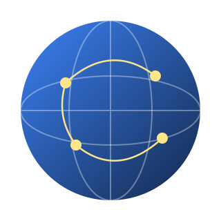

Collect
Gather devices that still have working life from business channels.
The most direct environmental contribution is a longer device life.

Electronic waste is among the fastest-growing waste streams. Putting working devices back into use after inspection reduces the resources and carbon emissions that producing new devices requires.
[If you quote e-waste or carbon figures, state the authoritative source and year]Gather devices that still have working life from business channels.
Inspect each device, erase its data and grade it.
Move devices into their next life through B2B channels.
The Sunstrike group treats sustainability as a core direction. [Certifications and carbon figures belong here only with documents, and must say whether they belong to the group or to Siersz]